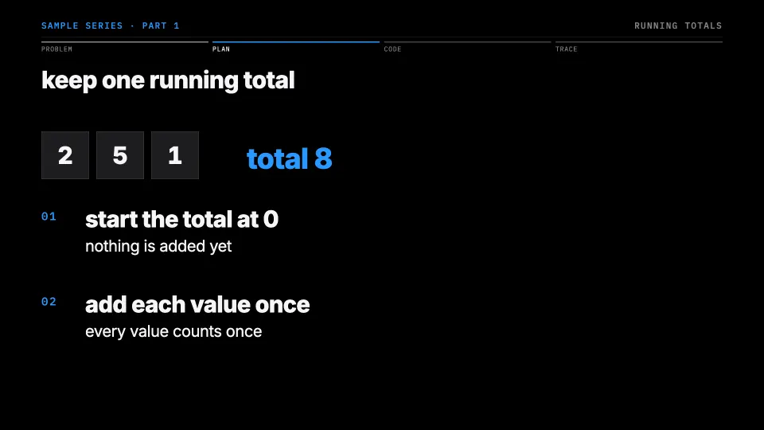

One source. Any genre.
A build has a shape (how long, which way up, what it delivers) and a pack (the genre's rules). Your channel or your video picks both.
Long
Chaptered, with captions, timestamps, description, thumbnail, kit.json and an audit-trail plan.md.
Short
One idea in 15–60 seconds, captions burned in.
Lesson
Segments with a checkpoint between each, plus lesson.mp4.
Each genre keeps its own rules.
Coding lesson
The problem, then think, plan, write and trace. Code built line by line, and the book never named.
O1–O6 · T1–T10 · B1Essay
One thesis, few words, every quotation attributed, and an ending that echoes the opening.
Y1–Y5News
Every fact attributed in the line, sources listed, a dated label, no hype.
W1–W5Skit
Every line has a speaker, every speaker a voice, and they take turns.
K1–K3Made by chalk, not for this page.
Eight-second theme demos, narrated once and rendered through the real pipeline.
Twenty-two looks.
Each with its palette, face, reveal style, finish and captions. How a video looks is your channel's choice.

Anywhere. Never public by surprise.
Deliver writes a neutral kit; each destination shapes it in its own words. YouTube uploads Private or scheduled, and platforms without a private post refuse unless you say --public-now.
From clone to your first video in Claude Code.